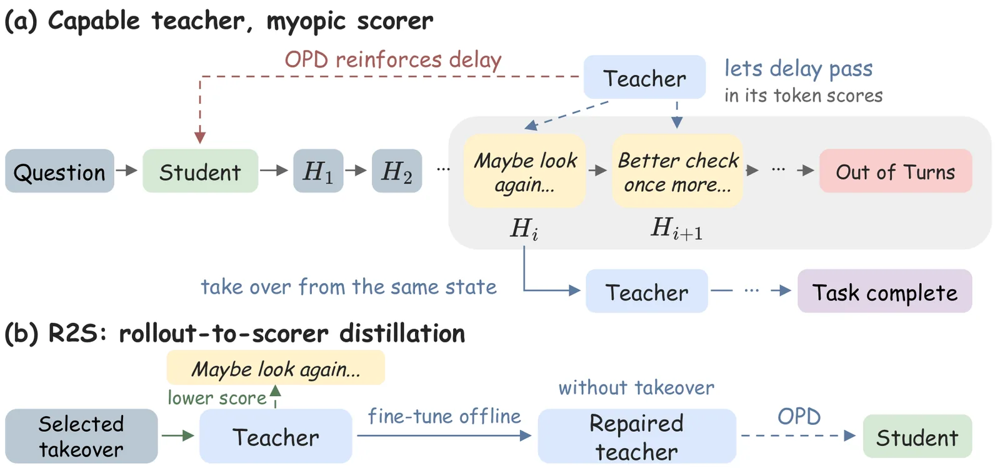
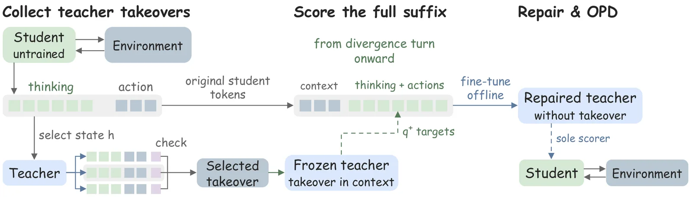
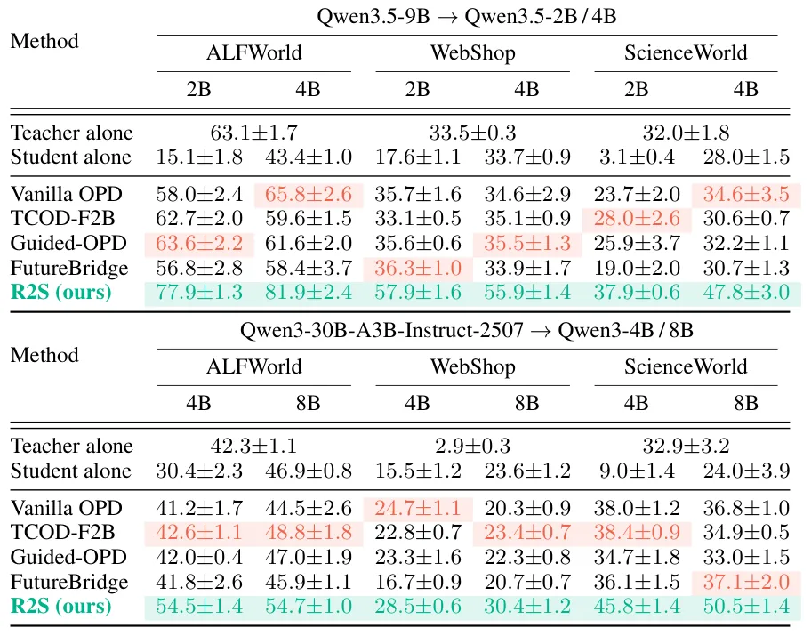
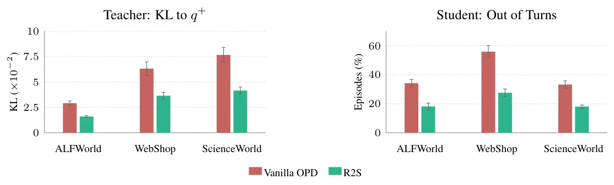

O Problema da Distilação Agênica On-Policy
A distilação agênica on-policy (OPD) é uma técnica poderosa para treinar agentes de IA. Nesse processo, um modelo 'aluno' interage com um ambiente real, gerando suas próprias trajetórias. Enquanto isso, um modelo 'professor', mais capaz, avalia cada token produzido pelo aluno em tempo real. A distribuição de probabilidade do professor sobre esses tokens serve como o sinal de treinamento denso para o aluno. Essa abordagem é a base de pipelines modernos de pós-treinamento multi-professor, como MiMo-V2-Flash e Nemotron-Cascade 2.
No entanto, a OPD tem uma falha crônica. A explicação tradicional é o erro composto: o aluno comete erros, desviando-se para regiões onde o professor não é confiável, e as avaliações nessas regiões tornam-se ruído. Métodos recentes tentam mitigar isso limitando o horizonte do aluno, replays de prefixos ou intervenções do professor quando há discordância. Mas os autores deste paper argumentam que essa explicação é incompleta.
O problema real não é apenas que o aluno sai da zona de confiança do professor, mas que o próprio professor, ao atuar como avaliador de tokens únicos, é miópico. Ele não vê o desfecho daEpisode. Essa desconexão entre a ação completa do professor e sua avaliação fragmentada do aluno é o cerne da falha que o R2S propõe corrigir.

A Miopia do Avaliador e a Lacuna Rollout-Score
Os autores identificam um fenômeno crítico chamado 'rollout-scorer gap' (lacuna entre trajetória e pontuação). Quando o professor atua (rollout), ele vê o resultado final de cada ação. Quando ele pontua (scorer) o aluno, ele avalia cada token isoladamente, sem saber se aquela ação levará ao sucesso ou fracasso.
Em tarefas de longo prazo, como buscar itens ou realizar experimentos, ações de 'adiamento' ou 'verificação extra' são seguras no curto prazo. Elas mantêm opções abertas. Um avaliador miópico dá uma pontuação neutra ou positiva a esses tokens de hesitação. No entanto, em ambientes com limite de turnos, esses atrasos consomem a cota disponível, levando ao fracasso por 'esgotamento de turnos'.
A RL baseada em recompensa puniria esse atraso com recompensa zero no final. A OPD pura não tem esse mecanismo. O aluno aprende que hesitar é aceitável porque o professor não o penaliza no momento. O resultado é que o aluno treinado continua hesitando até falhar, mesmo que o professor pudesse resolver o problema se tivesse assumido o controle naquele exato momento.
R2S: Do Rollout à Pontuação
A proposta é o Rollout-to-Scorer Distillation (R2S). A ideia central é reparar o professor (ou um cópia dele) antes de iniciar a distilação. O objetivo é fazer com que o professor dê pontuações mais baixas aos tokens de hesitação, informando-o sobre o contexto de sucesso que ele perde ao avaliar token a token.
O processo começa identificando os estados onde o aluno não treinado mais discorda do professor. São os pontos de divergência. A partir desses estados, o professor realiza 'takeovers', assumindo o controle e completando a tarefa. Isso prova que o problema não é a incapacidade do professor, mas a falha na avaliação do aluno.
Os autores filtram esses takeovers. Eles mantêm apenas aqueles que passam em uma verificação livre de recompensa, como consenso entre múltiplas execuções ou aprovação por um juiz LLM. Isso garante que estamos usando trajetórias de sucesso para corrigir o avaliador.

Detalhes da Implementação
Na prática, o R2S funciona em três etapas claras. Primeiro, o professor assume os estados mais problemáticos do aluno. Segundo, seleciona-se as trajetórias de sucesso. Terceiro, realiza-se um fine-tuning offline do professor.
Durante o fine-tuning, o professor é treinado para fornecer pontuações que refletem o sucesso do takeover. O modelo reparado aprende a dar notas mais baixas para os tokens de hesitação do aluno, mesmo sem ver o takeover no contexto de entrada. Isso é crucial: o aluno final nunca verá o takeover, apenas as pontuações corrigidas.
O professor reparado é então congelado e usado como o único avaliador durante a distilação on-policy padrão. O aluno é treinado com o objetivo normal de OPD, mas agora recebe sinais que penalizam adequadamente os atrasos. Não é necessária nenhuma recompensa explícita do ambiente durante essa fase de reparo ou treinamento.
Configuração Experimental
Os experimentos utilizam pares de modelos Qwen3 e Qwen3.5, variando de 2B a 30B parâmetros, incluindo arquiteturas densas e MoE. Os ambientes testados são ALFWorld (tarefas domésticas), WebShop (compras online) e ScienceWorld (experimentos científicos).
Cada ambiente tem um limite rígido de turnos: 30 no ALFWorld e ScienceWorld, 15 no WebShop. O protocolo de avaliação é consistente: cada episódio é avaliado pela taxa de sucesso. Os autores comparam o R2S contra Vanilla OPD, TCOD-F2B, Guided-OPD e FutureBridge.
O treinamento do aluno ocorre por 150 passos. Para o reparo do professor, são minerados até 2.400 estados de alta divergência, com 8 takeovers por estado. O fine-tuning do professor reparado dura uma epoch. O setup é desenhado para isolar o impacto da correção de pontuação.

Resultados e Análise
Os resultados são consistentes e significativos. Em todas as 12 células de teste (combinações de modelo e ambiente), o R2S superou os métodos de estado da arte. A melhoria média foi de 12,8 pontos percentuais de sucesso em relação ao melhor método base em cada célula.
Por exemplo, no ALFWorld com Qwen3.5-9B ensinando Qwen3.5-4B, o Vanilla OPD alcançou 63,6% de sucesso, enquanto o R2S atingiu 77,9%. No WebShop, a melhoria foi de 35,6% para 57,9%. Isso demonstra que a correção da miopia do professor tem um impacto direto na capacidade do aluno de concluir tarefas longas.
Os gráficos de aprendizado mostram que os alunos treinados com R2S separam-se rapidamente dos baselines, indicando que o sinal de treinamento é mais informativo desde o início. O aluno não apenas aprende mais rápido, mas atinge um patamar de desempenho superior.

Por que isso funciona? A Redução do Erro de Hesitação
A análise detalhada revela que o R2S ataca diretamente a causa raiz do fracasso em ambientes limitados por turnos. O gráfico de ablação mostra que, com o R2S, o número de episódios que terminam por 'esgotamento de turnos' é reduzido pela metade.
Isso confirma a hipótese inicial: o problema não era a falta de habilidade do aluno, mas a falta de penalidade adequada para comportamentos de adiamento. Ao corrigir as pontuações do professor, o R2S ensina o aluno a ser mais decisivo e direto, evitando a armadilha da 'paralisia por análise' que consome recursos limitados.
Além disso, a divergência KL entre o professor original e o reparado indica que o modelo está de fato aprendendo a alterar suas distribuições de probabilidade para refletir o sucesso da trajetória completa, e não apenas a adequação local do token.
Limitações e Considerações
Apesar dos resultados promissores, o R2S tem limitações claras. Primeiro, o custo computacional do reparo é significativo. São necessárias 19.200 trajetórias de takeover para minerar e selecionar os dados de treinamento do professor. Isso adiciona uma etapa cara antes do treinamento do aluno.
Segundo, o método depende de ambientes repliáveis. O professor precisa ser capaz de assumir o controle a partir de um estado exato gerado pelo aluno. Isso limita a aplicação direta a ambientes onde o estado pode ser restaurado, como os benchmarks usados aqui. Ambientes reais com estados não determinísticos ou não restauráveis seriam desafiadores.
Terceiro, os experimentos foram conduzidos apenas na família de modelos Qwen3 e Qwen3.5. Embora a lógica seja geral, a eficácia em outras arquiteturas ou famílias de modelos precisa ser validada. A abordagem também assume que o professor é capaz de resolver os estados de divergência, o que nem sempre é verdade em problemas extremamente complexos.
Conclusão
O Capable Teacher, Myopic Scorer apresenta uma solução elegante para um problema sutil na distilação agênica. Ao reparar o professor com informações de trajetória completa (takeovers), o R2S alinha as pontuações locais com o sucesso global.
O método é reward-free, eficiente em termos de sinal de treinamento e robusto em diversos ambientes e tamanhos de modelo. Ele demonstra que, muitas vezes, o gargalo no treinamento de agentes não é a capacidade do aluno, mas a qualidade do feedback que ele recebe.
Para desenvolvedores e pesquisadores em IA agênica, o R2S oferece um novo paradigma: antes de treinar o aluno, verifique se seu professor está 'olhando' para o futuro suficiente para dar o feedback correto.
O que fica
- A distilação agênica falha porque professores avaliam tokens sem ver o desfecho, permitindo atrasos que consomem turnos.
- O método R2S usa 'takeovers' do professor para ensinar o modelo a punir essas hesitações antes do treinamento do aluno.
- Resultados mostram ganhos médios de 12,8 pontos de sucesso em três ambientes complexos comparado a SOTA.
- A abordagem é reward-free, não exigindo recompensas explícitas do ambiente para corrigir o professor.
Paper original: Capable Teacher, Myopic Scorer: Reward-Free Teacher Repair for Agentic On-Policy Distillation
Comentários
Nenhum comentário ainda. Seja o primeiro.